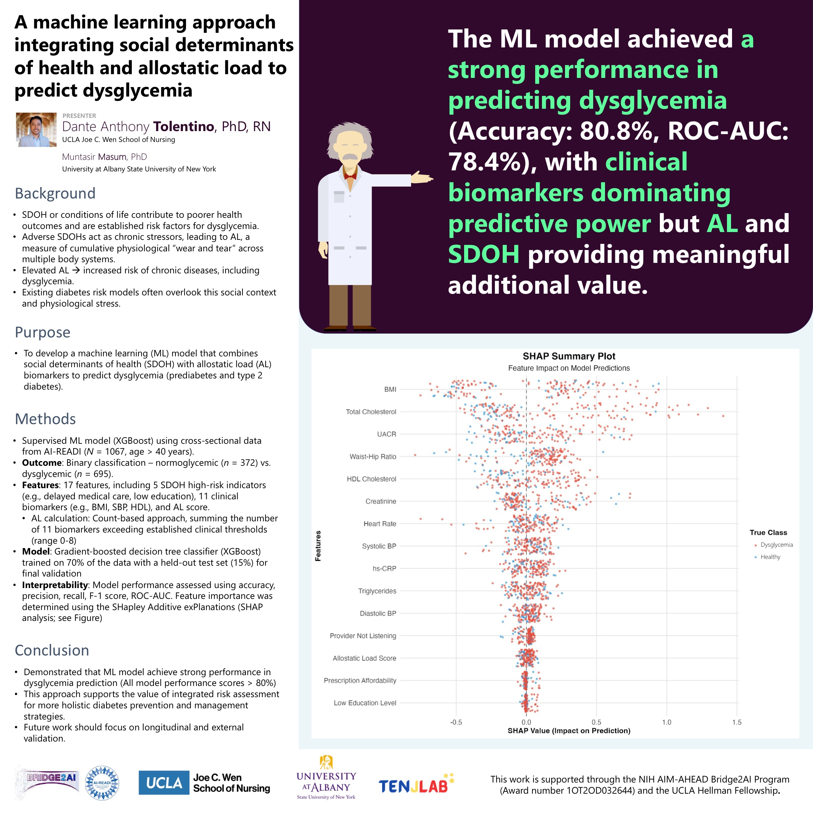

Poster · Society of Biopsychosocial Science and Medicine · 2026
Adding people’s social circumstances and the body’s “wear and tear” from chronic stress to a machine-learning model helped predict who is at risk for high blood sugar, beyond the usual clinical numbers alone.
Diabetes risk tools usually rely on clinical numbers like blood pressure and body mass index, and often ignore the social conditions of people’s lives and the toll that chronic stress takes on the body. This study built a machine-learning model that combined social determinants of health and “allostatic load” (a measure of the body’s cumulative stress) with the usual clinical markers to predict dysglycemia (prediabetes and type 2 diabetes). The model predicted risk well, and although clinical markers carried the most weight, the social and stress factors added meaningful value, suggesting that risk tools should consider the whole person.
The model used supervised machine learning (XGBoost) on cross-sectional AI-READI data (1,067 adults over 40), classifying people as normoglycemic or dysglycemic. It drew on 17 features: five high-risk social indicators (such as delayed medical care and low education), eleven clinical biomarkers, and an allostatic load score.
Performance was strong (80.8% accuracy; ROC-AUC 78.4%). The work is supported by the NIH AIM-AHEAD Bridge2AI Program and the UCLA Hellman Fellowship. As a cross-sectional study, it identifies patterns of association rather than proving cause and effect.
Combines social conditions and the biology of stress with standard clinical markers.
The model predicted dysglycemia with about 81% accuracy.
Social and stress factors added value, suggesting risk tools should look beyond clinical numbers.
